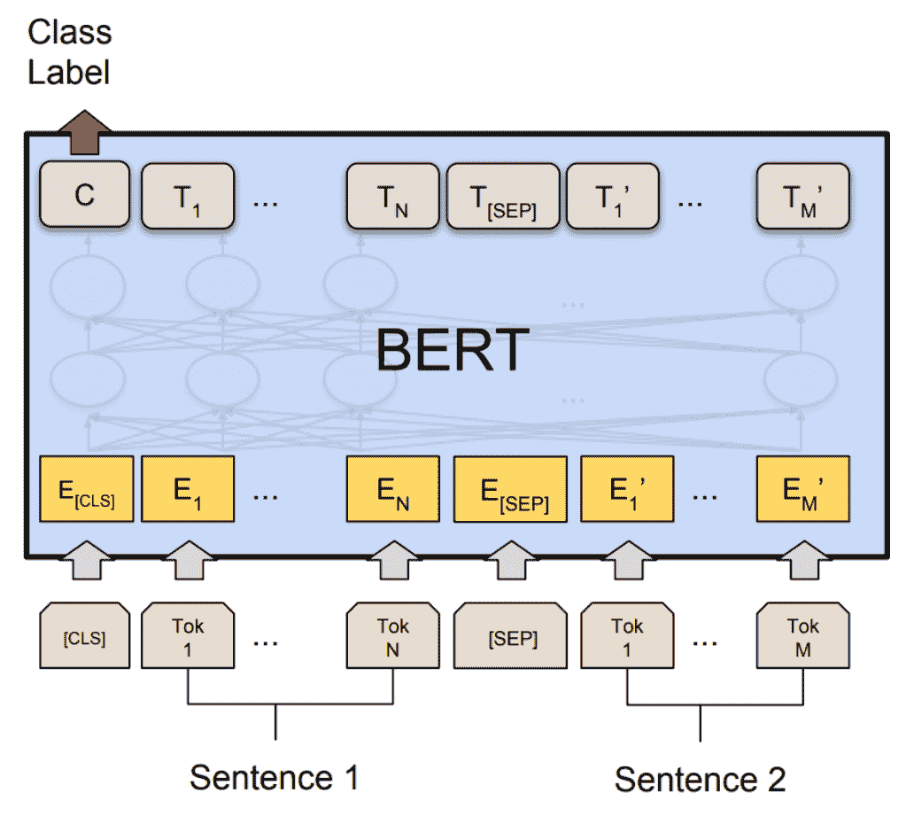

(实验）BERT 上的动态量化
原文： https://pytorch.org/tutorials/intermediate/dynamic_quantization_bert_tutorial.html
小费
为了充分利用本教程，我们建议使用此 Colab 版本。 这将使您可以尝试以下信息。
作者：黄建宇
被审核： Raghuraman Krishnamoorthi
由编辑：林 ess 琳
介绍
在本教程中，我们将动态量化应用在 BERT 模型上，紧跟 HuggingFace Transformers 示例中的 BERT 模型。 通过这一循序渐进的过程，我们将演示如何将 BERT 等众所周知的最新模型转换为动态量化模型。
- BERT，或者说 Transformers 的双向嵌入表示法，是一种预训练语言表示法的新方法，可以在许多流行的自然语言处理(NLP）任务(例如问题解答，文本分类， 和别的。 可以在此处找到。
- PyTorch 中的动态量化支持将权重模型的浮点模型转换为具有静态 int8 或 float16 数据类型的量化模型，并为激活提供动态量化。 当权重量化为 int8 时，激活(每批）动态量化为 int8。 在 PyTorch 中，我们有 torch.quantization.quantize_dynamic API ，它用仅动态权重的量化版本替换了指定的模块，并输出了量化模型。
- 我们在通用语言理解评估基准(GLUE）中演示了 Microsoft Research Paraphrase 语料库(MRPC）任务的准确性和推理性能结果。 MRPC(Dolan 和 Brockett，2005 年）是从在线新闻源中自动提取的句子对的语料库，带有人工注释，说明句子中的句子在语义上是否等效。 由于班级不平衡(正向为 68％，负向为 32％），我们遵循常规做法并报告 F1 得分。 MRPC 是用于语言对分类的常见 NLP 任务，如下所示。

1.设定
1.1 安装 PyTorch 和 HuggingFace 变压器
要开始本教程，首先请遵循 PyTorch (此处）和 HuggingFace Github Repo (此处）中的安装说明。 此外，我们还将安装 scikit-learn 软件包，因为我们将重复使用其内置的 F1 分数计算帮助器功能。
pip install sklearn
pip install transformers
由于我们将使用 PyTorch 的实验部分，因此建议安装最新版本的 Torch 和 Torchvision。 您可以在此处找到有关本地安装的最新说明。 例如，要在 Mac 上安装：
yes y | pip uninstall torch tochvision
yes y | pip install --pre torch -f https://download.pytorch.org/whl/nightly/cu101/torch_nightly.html
1.2 导入必要的模块
在这一步中，我们将导入本教程所需的 Python 模块。
from __future__ import absolute_import, division, print_function
import logging
import numpy as np
import os
import random
import sys
import time
import torch
from argparse import Namespace
from torch.utils.data import (DataLoader, RandomSampler, SequentialSampler,
TensorDataset)
from tqdm import tqdm
from transformers import (BertConfig, BertForSequenceClassification, BertTokenizer,)
from transformers import glue_compute_metrics as compute_metrics
from transformers import glue_output_modes as output_modes
from transformers import glue_processors as processors
from transformers import glue_convert_examples_to_features as convert_examples_to_features
# Setup logging
logger = logging.getLogger(__name__)
logging.basicConfig(format = '%(asctime)s - %(levelname)s - %(name)s - %(message)s',
datefmt = '%m/%d/%Y %H:%M:%S',
level = logging.WARN)
logging.getLogger("transformers.modeling_utils").setLevel(
logging.WARN) # Reduce logging
print(torch.__version__)
我们设置线程数以比较 FP32 和 INT8 性能之间的单线程性能。 在本教程的最后，用户可以通过使用右侧并行后端构建 PyTorch 来设置其他线程数量。
torch.set_num_threads(1)
print(torch.__config__.parallel_info())
1.3 了解助手功能
帮助器功能内置在转换器库中。 我们主要使用以下辅助函数：一个用于将文本示例转换为特征向量的函数； 另一个用于测量预测结果的 F1 分数。
gum_convert_examples_to_features 函数将文本转换为输入特征：
- 标记输入序列；
- 在开头插入[CLS]；
- 在第一句和第二句之间并在最后插入[SEP]；
- 生成令牌类型 ID，以指示令牌是属于第一序列还是第二序列。
gum_compute_metrics 函数的计算指标为 F1 得分，可以将其解释为精度和召回率的加权平均值，其中 F1 得分在 1 和最差处达到最佳值 得分为 0。精度和召回率对 F1 得分的相对贡献相等。
- F1 分数的公式为：
1.4 下载数据集
在运行 MRPC 任务之前，我们通过运行此脚本并下载 GLUE 数据并将其解压缩到目录glue_data中。
python download_glue_data.py --data_dir='glue_data' --tasks='MRPC'
2.微调 BERT 模型
BERT 的精神是预训练语言表示形式，然后以最小的任务相关参数对各种任务上的深层双向表示形式进行微调，并获得最新的结果。 在本教程中，我们将专注于对预训练的 BERT 模型进行微调，以对 MRPC 任务上的语义等效句子对进行分类。
要为 MRPC 任务微调预训练的 BERT 模型(HuggingFace 变压器中的bert-base-uncased模型），可以按照示例中的命令进行操作：
export GLUE_DIR=./glue_data
export TASK_NAME=MRPC
export OUT_DIR=./$TASK_NAME/
python ./run_glue.py \
--model_type bert \
--model_name_or_path bert-base-uncased \
--task_name $TASK_NAME \
--do_train \
--do_eval \
--do_lower_case \
--data_dir $GLUE_DIR/$TASK_NAME \
--max_seq_length 128 \
--per_gpu_eval_batch_size=8 \
--per_gpu_train_batch_size=8 \
--learning_rate 2e-5 \
--num_train_epochs 3.0 \
--save_steps 100000 \
--output_dir $OUT_DIR
我们在此处为 MRPC 任务提供了经过微调的 BERT 模型。 为了节省时间，您可以将模型文件(〜400 MB）直接下载到本地文件夹$OUT_DIR中。
2.1 设置全局配置
在这里，我们设置了全局配置，用于评估动态量化前后的微调 BERT 模型。
configs = Namespace()
# The output directory for the fine-tuned model, $OUT_DIR.
configs.output_dir = "./MRPC/"
# The data directory for the MRPC task in the GLUE benchmark, $GLUE_DIR/$TASK_NAME.
configs.data_dir = "./glue_data/MRPC"
# The model name or path for the pre-trained model.
configs.model_name_or_path = "bert-base-uncased"
# The maximum length of an input sequence
configs.max_seq_length = 128
# Prepare GLUE task.
configs.task_name = "MRPC".lower()
configs.processor = processors[configs.task_name]()
configs.output_mode = output_modes[configs.task_name]
configs.label_list = configs.processor.get_labels()
configs.model_type = "bert".lower()
configs.do_lower_case = True
# Set the device, batch size, topology, and caching flags.
configs.device = "cpu"
configs.per_gpu_eval_batch_size = 8
configs.n_gpu = 0
configs.local_rank = -1
configs.overwrite_cache = False
# Set random seed for reproducibility.
def set_seed(seed):
random.seed(seed)
np.random.seed(seed)
torch.manual_seed(seed)
set_seed(42)
2.2 加载微调的 BERT 模型
我们从configs.output_dir加载标记器和经过微调的 BERT 序列分类器模型(FP32）。
tokenizer = BertTokenizer.from_pretrained(
configs.output_dir, do_lower_case=configs.do_lower_case)
model = BertForSequenceClassification.from_pretrained(configs.output_dir)
model.to(configs.device)
2.3 定义标记化和评估功能
我们重用了 Huggingface 中的标记化和评估函数。
# coding=utf-8
# Copyright 2018 The Google AI Language Team Authors and The HuggingFace Inc. team.
# Copyright (c) 2018, NVIDIA CORPORATION. All rights reserved.
#
# Licensed under the Apache License, Version 2.0 (the "License");
# you may not use this file except in compliance with the License.
# You may obtain a copy of the License at
#
# http://www.apache.org/licenses/LICENSE-2.0
#
# Unless required by applicable law or agreed to in writing, software
# distributed under the License is distributed on an "AS IS" BASIS,
# WITHOUT WARRANTIES OR CONDITIONS OF ANY KIND, either express or implied.
# See the License for the specific language governing permissions and
# limitations under the License.
def evaluate(args, model, tokenizer, prefix=""):
# Loop to handle MNLI double evaluation (matched, mis-matched)
eval_task_names = ("mnli", "mnli-mm") if args.task_name == "mnli" else (args.task_name,)
eval_outputs_dirs = (args.output_dir, args.output_dir + '-MM') if args.task_name == "mnli" else (args.output_dir,)
results = {}
for eval_task, eval_output_dir in zip(eval_task_names, eval_outputs_dirs):
eval_dataset = load_and_cache_examples(args, eval_task, tokenizer, evaluate=True)
if not os.path.exists(eval_output_dir) and args.local_rank in [-1, 0]:
os.makedirs(eval_output_dir)
args.eval_batch_size = args.per_gpu_eval_batch_size * max(1, args.n_gpu)
# Note that DistributedSampler samples randomly
eval_sampler = SequentialSampler(eval_dataset) if args.local_rank == -1 else DistributedSampler(eval_dataset)
eval_dataloader = DataLoader(eval_dataset, sampler=eval_sampler, batch_size=args.eval_batch_size)
# multi-gpu eval
if args.n_gpu > 1:
model = torch.nn.DataParallel(model)
# Eval!
logger.info("***** Running evaluation {} *****".format(prefix))
logger.info(" Num examples = %d", len(eval_dataset))
logger.info(" Batch size = %d", args.eval_batch_size)
eval_loss = 0.0
nb_eval_steps = 0
preds = None
out_label_ids = None
for batch in tqdm(eval_dataloader, desc="Evaluating"):
model.eval()
batch = tuple(t.to(args.device) for t in batch)
with torch.no_grad():
inputs = {'input_ids': batch[0],
'attention_mask': batch[1],
'labels': batch[3]}
if args.model_type != 'distilbert':
inputs['token_type_ids'] = batch[2] if args.model_type in ['bert', 'xlnet'] else None # XLM, DistilBERT and RoBERTa don't use segment_ids
outputs = model(**inputs)
tmp_eval_loss, logits = outputs[:2]
eval_loss += tmp_eval_loss.mean().item()
nb_eval_steps += 1
if preds is None:
preds = logits.detach().cpu().numpy()
out_label_ids = inputs['labels'].detach().cpu().numpy()
else:
preds = np.append(preds, logits.detach().cpu().numpy(), axis=0)
out_label_ids = np.append(out_label_ids, inputs['labels'].detach().cpu().numpy(), axis=0)
eval_loss = eval_loss / nb_eval_steps
if args.output_mode == "classification":
preds = np.argmax(preds, axis=1)
elif args.output_mode == "regression":
preds = np.squeeze(preds)
result = compute_metrics(eval_task, preds, out_label_ids)
results.update(result)
output_eval_file = os.path.join(eval_output_dir, prefix, "eval_results.txt")
with open(output_eval_file, "w") as writer:
logger.info("***** Eval results {} *****".format(prefix))
for key in sorted(result.keys()):
logger.info(" %s = %s", key, str(result[key]))
writer.write("%s = %s\n" % (key, str(result[key])))
return results
def load_and_cache_examples(args, task, tokenizer, evaluate=False):
if args.local_rank not in [-1, 0] and not evaluate:
torch.distributed.barrier() # Make sure only the first process in distributed training process the dataset, and the others will use the cache
processor = processors[task]()
output_mode = output_modes[task]
# Load data features from cache or dataset file
cached_features_file = os.path.join(args.data_dir, 'cached_{}_{}_{}_{}'.format(
'dev' if evaluate else 'train',
list(filter(None, args.model_name_or_path.split('/'))).pop(),
str(args.max_seq_length),
str(task)))
if os.path.exists(cached_features_file) and not args.overwrite_cache:
logger.info("Loading features from cached file %s", cached_features_file)
features = torch.load(cached_features_file)
else:
logger.info("Creating features from dataset file at %s", args.data_dir)
label_list = processor.get_labels()
if task in ['mnli', 'mnli-mm'] and args.model_type in ['roberta']:
# HACK(label indices are swapped in RoBERTa pretrained model)
label_list[1], label_list[2] = label_list[2], label_list[1]
examples = processor.get_dev_examples(args.data_dir) if evaluate else processor.get_train_examples(args.data_dir)
features = convert_examples_to_features(examples,
tokenizer,
label_list=label_list,
max_length=args.max_seq_length,
output_mode=output_mode,
pad_on_left=bool(args.model_type in ['xlnet']), # pad on the left for xlnet
pad_token=tokenizer.convert_tokens_to_ids([tokenizer.pad_token])[0],
pad_token_segment_id=4 if args.model_type in ['xlnet'] else 0,
)
if args.local_rank in [-1, 0]:
logger.info("Saving features into cached file %s", cached_features_file)
torch.save(features, cached_features_file)
if args.local_rank == 0 and not evaluate:
torch.distributed.barrier() # Make sure only the first process in distributed training process the dataset, and the others will use the cache
# Convert to Tensors and build dataset
all_input_ids = torch.tensor([f.input_ids for f in features], dtype=torch.long)
all_attention_mask = torch.tensor([f.attention_mask for f in features], dtype=torch.long)
all_token_type_ids = torch.tensor([f.token_type_ids for f in features], dtype=torch.long)
if output_mode == "classification":
all_labels = torch.tensor([f.label for f in features], dtype=torch.long)
elif output_mode == "regression":
all_labels = torch.tensor([f.label for f in features], dtype=torch.float)
dataset = TensorDataset(all_input_ids, all_attention_mask, all_token_type_ids, all_labels)
return dataset
3.应用动态量化
我们在模型上调用torch.quantization.quantize_dynamic，将动态量化应用于 HuggingFace BERT 模型。 特别，
- 我们指定要对模型中的 torch.nn.Linear 模块进行量化；
- 我们指定希望将权重转换为量化的 int8 值。
quantized_model = torch.quantization.quantize_dynamic(
model, {torch.nn.Linear}, dtype=torch.qint8
)
print(quantized_model)
3.1 检查型号
我们首先检查一下模型尺寸。 我们可以看到模型大小显着减少(FP32 总大小：438 MB； INT8 总大小：181 MB）：
def print_size_of_model(model):
torch.save(model.state_dict(), "temp.p")
print('Size (MB):', os.path.getsize("temp.p")/1e6)
os.remove('temp.p')
print_size_of_model(model)
print_size_of_model(quantized_model)
本教程中使用的 BERT 模型(bert-base-uncased）的词汇量 V 为 30522。在嵌入量为 768 的情况下，单词嵌入表的总大小为〜4(字节/ FP32）* 30522 * 768 = 90 MB 。 因此，借助量化，非嵌入表部分的模型大小从 350 MB(FP32 模型）减少到 90 MB(INT8 模型）。
3.2 评估推理的准确性和时间
接下来，我们比较一下动态量化后原始 FP32 模型和 INT8 模型之间的推断时间以及评估精度。
def time_model_evaluation(model, configs, tokenizer):
eval_start_time = time.time()
result = evaluate(configs, model, tokenizer, prefix="")
eval_end_time = time.time()
eval_duration_time = eval_end_time - eval_start_time
print(result)
print("Evaluate total time (seconds): {0:.1f}".format(eval_duration_time))
# Evaluate the original FP32 BERT model
time_model_evaluation(model, configs, tokenizer)
# Evaluate the INT8 BERT model after the dynamic quantization
time_model_evaluation(quantized_model, configs, tokenizer)
在 MacBook Pro 上本地运行此程序，无需进行量化，推理(对于 MRPC 数据集中的所有 408 个示例）大约需要 160 秒，而进行量化则只需大约 90 秒。 我们总结了在 Macbook Pro 上运行量化 BERT 模型推断的结果，如下所示：
| Prec | F1 score | Model Size | 1 thread | 4 threads |
| FP32 | 0.9019 | 438 MB | 160 sec | 85 sec |
| INT8 | 0.8953 | 181 MB | 90 sec | 46 sec |
在 MRPC 任务的微调 BERT 模型上应用训练后动态量化后，我们的 F1 分数准确性为 0.6％。 作为比较，在的最新论文(表 1）中，通过应用训练后动态量化，可以达到 0.8788；通过应用量化感知训练，可以达到 0.8956。 主要区别在于我们在 PyTorch 中支持非对称量化，而该论文仅支持对称量化。
请注意，在本教程中，为了进行单线程比较，我们将线程数设置为 1。 对于这些量化的 INT8 运算符，我们还支持运算内并行化。 用户现在可以通过torch.set_num_threads(N)设置多线程(N是内部运算并行线程的数量）。 启用帧内并行支持的一项初步要求是使用正确的后端(例如 OpenMP，Native 或 TBB）构建 PyTorch。 您可以使用torch.__config__.parallel_info()检查并行化设置。 在使用 PyTorch 和本机后端进行并行化的同一台 MacBook Pro 上，我们可以获得大约 46 秒的时间来处理 MRPC 数据集的评估。
3.3 序列化量化模型
我们可以序列化并保存量化模型，以备将来使用。
quantized_output_dir = configs.output_dir + "quantized/"
if not os.path.exists(quantized_output_dir):
os.makedirs(quantized_output_dir)
quantized_model.save_pretrained(quantized_output_dir)
结论
在本教程中，我们演示了如何演示如何将 BERT 等著名的最新 NLP 模型转换为动态量化模型。 动态量化可以减小模型的大小，而对准确性的影响有限。
谢谢阅读！ 与往常一样，我们欢迎您提供任何反馈，因此，如果有任何问题，请在此处创建一个问题。
参考文献
[1] J.Devlin，M。Chang，K。Lee 和 K. Toutanova， BERT：用于语言理解的深度双向变压器的预训练(2018）。
[2] HuggingFace 变压器。
[3] O. Zafrir，G。Boudoukh，P。Izsak 和 M. Wasserblat(2019 年）。 Q8BERT：量化的 8 位 BERT 。